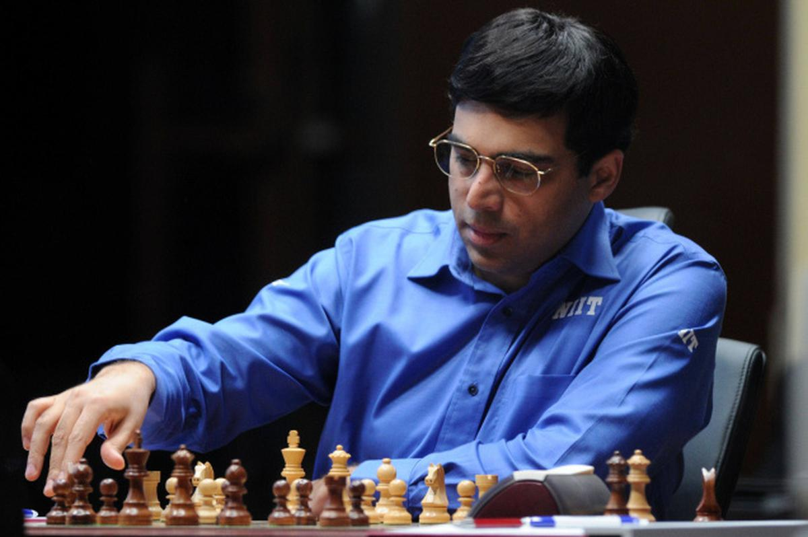

Viswanathan Anand, the 15th undisputed chess champion and surely the greatest Indian chess player of all time, was born on December 11, 1969, in Mayiladuthurai in Tamil Nadu, the southeasternmost state in India. Anand, noted for playing quickly early in his career, competed for the classical championship in 1995 and was FIDE champion from 2000-2002 before claiming the reunited title in 2007. He held that title for six years until 2013 and has also had a productive post-championship career at an age when many other top players have retired.
Anand learned to play chess from his mother when he was 6 years old. By the time he was 14, Anand had won the Indian National Sub-Junior Championship with a perfect score of nine wins in nine games. At age 15 he became the youngest Indian to earn the international master title. The following year, he won the first of three consecutive national championships. At age 17 Anand became the first Asian to win a world chess title when he won the 1987 FIDE World Junior Championship, which is open to players who have not reached their 20th birthday by January 1 of the tournament year.
Viswanathan Anand, often affectionately called "Vishy," is not only a chess grandmaster but also a family man. He is married to Aruna Anand, who has been a pillar of support throughout his career. Aruna has played a crucial role in managing Anand's professional commitments and has been an integral part of his journey.
The couple has a son named Akhil Anand, born in 2011. Anand has often mentioned in interviews how fatherhood has been a transformative experience for him, providing a new perspective on life beyond chess.
Anand is known for his humility and grace, both on and off the chessboard. Despite his numerous achievements and global fame, he remains grounded and approachable. His sportsmanship is exemplary, often being the first to congratulate his opponents, win or lose. This quality has earned him respect and admiration from peers and fans alike.
In addition to chess, Anand enjoys reading and listening to music. He is a fan of classic rock bands and enjoys playing table tennis. His multifaceted interests and amiable personality make him a beloved figure not just in the world of chess but also among the general public.
Viswanathan Anand's contributions to chess are immense and far-reaching. He is credited with popularizing chess in India, inspiring a new generation of players. Before Anand, India had a limited presence in the global chess scene. His success has led to a chess boom in the country, with many young talents taking up the game and achieving international recognition.
As a role model, Anand has shown that with dedication, hard work, and a strategic mind, one can achieve great heights. His victories against formidable opponents in world championships have showcased his mental fortitude and tactical prowess, earning him a place among the all-time greats in chess history.
Anand's legacy extends beyond his personal achievements. He has been involved in various initiatives to promote chess at the grassroots level. He regularly conducts workshops, interacts with young players, and supports chess programs in schools. His efforts have helped create a strong foundation for the future of chess in India.
Globally, Anand is respected not just as a champion but also as an ambassador of the game. His sportsmanship, humility, and dedication to chess have made him a beloved figure worldwide. He has been honored with numerous awards, including the Padma Vibhushan, India's second-highest civilian award, in recognition of his contributions to the sport.
Viswanathan Anand's legacy is not just defined by his titles and awards, but by the inspiration he continues to provide to millions. He has shown that with passion and perseverance, one can overcome any obstacle. His impact on the world of chess will be felt for generations to come.